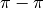

Introduction¶
Overview¶
Psi4 provides a wide variety of quantum chemical methods using state-of-the-art numerical methods and algorithms. Several parts of the code feature shared-memory parallelization to run efficiently on multi-core machines (see Sec. Threading). An advanced parser written in Python allows the user input to have a very simple style for routine computations, but it can also automate very complex tasks with ease.
In this section, we provide an overview of some of the features of Psi4 along with the prerequisite steps for running calculations. Sec. Tutorial provides a brief tutorial to help new users get started. Section Psithon offers further details into the structure of Psi4 input files and how Python can be mixed with quantum chemistry directives in Psi4. Section Psithon Functions provides more detail on the Python functions provided by Psi4 and discusses some of the higher-level functions such as counterpoise correction, complete-basis-set extrapolation, and running computations on an entire database of molecules at a time. Later sections deal with the different types of computations which can be done using Psi4 (e.g., Hartree–Fock, MP2, coupled-cluster) and general procedures such as geometry optimization and vibrational frequency analysis. The Appendices include a complete description of all possible input keywords for each module, as well as tables of available basis sets and a listing of the sample input files available under psi4/samples. The user is urged to examine this directory of sample inputs, as most common types of computations are represented there. For the latest Psi4 documentation, check www.psicode.org.
Citing Psi4¶
Overall Psi4 Package¶
The following citation should be used in any publication utilizing the Psi4 program package:
- “Psi4: An open-source ab initio electronic structure program,” J. M. Turney, A. C. Simmonett, R. M. Parrish, E. G. Hohenstein, F. Evangelista, J. T. Fermann, B. J. Mintz, L. A. Burns, J. J. Wilke, M. L. Abrams, N. J. Russ, M. L. Leininger, C. L. Janssen, E. T. Seidl, W. D. Allen, H. F. Schaefer, R. A. King, E. F. Valeev, C. D. Sherrill, and T. D. Crawford, WIREs Comput. Mol. Sci. 2, 556 (2012). (doi: 10.1002/wcms.93).
Depending on the particular modules used, the user may also wish to cite some of the following references for theoretical, algorithmic, or implementation contributions specific to Psi4 (in addition to appropriate references for the underlying theory, which are not necessarily included in the list below).
Density Cumulant Functional Theory (DCFT)¶
Psi4 features several formulations of newly-developed density cumulant functional theory (DCFT). The theory and benchmark of this theory are discussed in the following papers:
DC-06 (also known as DCFT-06):
- “Density Cumulant Functional Theory: First Implementation and Benchmark Results for the DCFT-06 Model,” A. C. Simmonett, J. J. Wilke, H. F. Schaefer, and W. Kutzelnigg, J. Chem. Phys. 133, 174122 (2010). (doi: 10.1063/1.3503657).
- “Analytic gradients for density cumulant functional theory: The DCFT-06 model,” A. Yu. Sokolov, J. J. Wilke, A. C. Simmonett, and H. F. Schaefer, J. Chem. Phys. 137, 054105 (2012). (doi: 10.1063/1.4739423).
DC-12:
- “Density cumulant functional theory: The DC-12 method, an improved description of the one-particle density matrix,” A. Yu. Sokolov, A. C. Simmonett, and H. F. Schaefer, J. Chem. Phys. 138, 024107 (2013). (doi: 10.1063/1.4773580).
ODC-06 and ODC-12:
- “Orbital-optimized density cumulant functional theory,” A. Yu. Sokolov, and H. F. Schaefer, J. Chem. Phys. 139, 204110 (2013). (doi: 10.1063/1.4833138).
ODC-13:
- “Density cumulant functional theory from a unitary transformation: N-representability, three-particle correlation effects, and application to O4+,” A. Yu. Sokolov, H. F. Schaefer, and W. Kutzelnigg, J. Chem. Phys. 141, 074111 (2014). (doi: 10.1063/1.4892946).
Configuration Interaction (CI)¶
PSI has a highly optimized code for full configuration interaction and highly correlated configuration interaction, as described in
- “The Configuration Interaction Method: Advances in Highly Correlated Approaches,” C. D. Sherrill and H. F. Schaefer, in Adv. Quantum Chem., vol. 34, P.-O. Löwdin, Ed. (Academic Press, New York, 1999), pp. 143-269. (doi: 10.1016/S0065-3276(08)60532-8).
Coupled Cluster (CC)¶
A general discussion of coupled cluster theory is given in
- “An Introduction to Coupled Cluster Theory for Computational Chemists,” T. D. Crawford and H. F. Schaefer, Rev. Comp. Chem. 14, 33-136 (2000). (doi: 10.1002/9780470125915.ch2).
Implementation of frozen natural orbital (FNO) coupled cluster theory in PSI and its performance for non-covalent interactions is discussed in
- “Accurate Noncovalent Interaction Energies Using Truncated Basis Sets Based on Frozen Natural Orbitals,” A. E. DePrince and C. D. Sherrill, J. Chem. Theory Comput. 9, 293-299 (2013). (doi: 10.1021/ct300780u).
Implementation of density-fitted (DF) and Cholesky decomposition (CD) coupled cluster in PSI, and its performance for non-covalent interactions and reaction energies, is discussed in
- “Accuracy and Efficiency of Coupled-Cluster Theory Using Density Fitting / Cholesky Decomposition, Frozen Natural Orbitals, and a T1-Transformed Hamiltonian,” A. E. DePrince and C. D. Sherrill, J. Chem. Theory Comput. 9, 2687-2696 (2013). (doi: 10.1021/ct400250u).
Implementation of the asymmetric triples correction for the density-fitted and cholesky-decomposed coupled-cluster singles and doubles method
- “A noniterative asymmetric triple excitation correction for the density-fitted coupled-cluster singles and doubles method: Preliminary applications,” U. Bozkaya, J. Chem. Phys. 144, 144108 (2016). (doi: 10.1063/1.4945706).
Mukherjee State-Specific Multi-Reference Coupled Cluster (Mk-MRCC)¶
Psi4 features production-level Mukherjee-style state-specific coupled-cluster theory, including perturbative triples and also associated multi-reference perturbation theories. The theory and Psi4 implementation of these methods is discussed in the following papers.
General Mk-MRCC
- “Coupling Term Derivation and General Implementation of State-Specific Multireference Coupled-Cluster Theories,” F. A. Evangelista, W. D. Allen, and H. F. Schaefer, J. Chem. Phys. 127, 024102 (2007). (doi: 10.1063/1.2743014).
Mk-MRCCSD(T)
- “Perturbative Triples Corrections in State-Specific Multireference Coupled Cluster Theory,” F. A. Evangelista, E. Prochnow, J. Gauss, and H. F. Schaefer, J. Chem. Phys. 132, 074107 (2010). (doi: 10.1063/1.3305335).
Mk-MRCCSDT(-n)
- “Triple Excitations in State-Specific Multireference Coupled Cluster Theory: Application of Mk-MRCCSDT and Mk-MRCCSDT-n Methods to Model Systems,” F. A. Evangelista, A. C. Simmonett, W. D. Allen, H. F. Schaefer, and J. Gauss, J. Chem. Phys. 128, 124104 (2008). (doi: 10.1063/1.2834927).
Mk-MRPT2
- “A Companion Perturbation Theory for State-specific Multireference Coupled Cluster Methods,” F. A. Evangelista, A. C. Simmonett, H. F. Schaefer, D. Mukherjee, and W. D. Allen, Phys. Chem. Chem. Phys. 11, 4728-4741 (2009). (doi: 10.1039/b822910d).
Symmetry-Adapted Perturbation Theory (SAPT)¶
Psi4 features an extremely efficient code to perform wavefunction-based Symmetry Adapted Perturbation Theory (SAPT). A good review article for this method is as follows:
- “Perturbation Theory Approach to Intermolecular Potential Energy Surfaces of van der Waals Complexes,” B. Jeziorski, R. Moszynski, and K. Szalewicz, Chem. Rev. 94, 1887-1930 (1994). (doi: 10.1021/cr00031a008).
Psi4 benefits enormously from the introduction of density fitting (DF) into SAPT. There are several SAPT truncations available in Psi4. For guidance on which one to choose, see the SAPT section of the manual and refer to the following systematic study:
- “Levels of Symmetry Adapted Perturbation Theory (SAPT). I. Efficiency and Performance for Interaction Energies,’’ T. M. Parker, L. A. Burns, R. M. Parrish, A. G. Ryno, and C. D. Sherrill, J. Chem. Phys. 140, 094106 (2014). (doi: 10.1063/1.4867135).
The theory and implementation of DF-SAPT is discussed in the following papers for various levels of SAPT.
DF-SAPT0
- “Large-scale Symmetry-adapted Perturbation Theory Computations via Density Fitting and Laplace Transformation Techniques: Investigating the Fundamental Forces of DNA-Intercalator Interactions,” E. G. Hohenstein, R. M. Parrish, C. D. Sherrill, J. M. Turney, and H. F. Schaefer, J. Chem. Phys. 135, 174017 (2011). (doi: 10.1063/1.3656681).
- “Density Fitting and Cholesky Decomposition Approximations in Symmetry-Adapted Perturbation Theory: Implementation and Application to Probe the Nature of  Interactions in Linear Acenes,” E. G. Hohenstein and C. D. Sherrill, J. Chem. Phys. 132, 184111 (2010). (doi: 10.1063/1.3426316).
SAPT2
- “Density Fitting of Intramonomer Correlation Effects in Symmetry-Adapted Perturbation Theory,” E. G. Hohenstein and C. D. Sherrill, J. Chem. Phys. 133, 014101 (2010). (doi: 10.1063/1.3451077).
SAPT2+, SAPT2+(3), SAPT2+3
- “Wavefunction Methods for Noncovalent Interactions,” E. G. Hohenstein and C. D. Sherrill, WIREs: Comput. Mol. Sci. 2, 304-326 (2012). (doi: 10.1002/wcms.84).
- “Density Fitting of Intramonomer Correlation Effects in Symmetry-Adapted Perturbation Theory,” E. G. Hohenstein and C. D. Sherrill, J. Chem. Phys. 133, 014101 (2010). (doi: 10.1063/1.3451077).
- “Efficient Evaluation of Triple Excitations in Symmetry-Adapted Perturbation Theory via MP2 Natural Orbitals,” E. G. Hohenstein and C. D. Sherrill, J. Chem. Phys. 133, 104107 (2010). (doi: 10.1063/1.3479400).
SAPT2+(CCD), SAPT2+(3)(CCD), and SAPT2+3(CCD)
- “Tractability Gains in Symmetry-Adapted Perturbation Theory Including Coupled Double Excitations: CCD+ST(CCD) Dispersion with Natural Orbital Truncations,’’ R. M. Parrish, E. G. Hohenstein, and C. D. Sherrill, J. Chem. Phys. 139, 174102 (2013). (doi: 10.1063/1.4826520).
- “Wavefunction Methods for Noncovalent Interactions,” E. G. Hohenstein and C. D. Sherrill, WIREs: Comput. Mol. Sci. 2, 304-326 (2012). (doi: 10.1002/wcms.84).
- “Density Fitting of Intramonomer Correlation Effects in Symmetry-Adapted Perturbation Theory,” E. G. Hohenstein and C. D. Sherrill, J. Chem. Phys. 133, 014101 (2010). (doi: 10.1063/1.3451077).
Orbital-Optimized Post-Hartree–Fock Methods¶
Orbital-optimized second-order perturbation theory (OMP2)
- “Quadratically convergent algorithm for orbital optimization in the orbital-optimized coupled-cluster doubles method and in orbital-optimized second-order Møller–Plesset perturbation theory,” U. Bozkaya, J. M. Turney, Y. Yamaguchi, H. F. Schaefer, and C. D. Sherrill, J. Chem. Phys. 135, 104103 (2011). (doi: 10.1063/1.3631129).
- “Analytic energy gradients for the orbital-optimized second-order Møller–Plesset perturbation theory,” U. Bozkaya and C. D. Sherrill, J. Chem. Phys. 138, 184103 (2013). (doi: 10.1063/1.4803662).
- “Orbital-Optimized Second-Order Perturbation Theory with Density-Fitting and Cholesky Decomposition Approximations: An Efficient Implementation,” U. Bozkaya, J. Chem. Theory Comput. 10, 2371 (2014). (doi: 10.1021/ct500231c).
Orbital-optimized third-order perturbation theory (OMP3)
- “Orbital-Optimized Third-Order Møller–Plesset Perturbation Theory and Its Spin-Component and Spin-Opposite Scaled Variants: Application to Symmetry Breaking Problems,” U. Bozkaya, J. Chem. Phys. 135, 224103 (2011). (doi: 10.1063/1.3665134).
- “Assessment of Orbital-Optimized Third-Order Møller–Plesset Perturbation Theory and Its Spin-Component and Spin-Opposite Scaled Variants for Thermochemistry and Kinetics,” E. Soydas and U. Bozkaya, J. Chem. Theory Comput. 9, 1452 (2013). (doi: 10.1021/ct301078q).
- “Analytic energy gradients for the orbital-optimized third-order Møller–Plesset Perturbation Theory,” U. Bozkaya, J. Chem. Phys. 139, 104116 (2013). (doi: 10.1063/1.4820877).
Orbital-optimized linearized coupled-cluster doubles method (OLCCD)
- “Orbital-optimized coupled-electron pair theory and its analytic gradients: Accurate equilibrium geometries, harmonic vibrational frequencies, and hydrogen transfer reactions,” U. Bozkaya and C. D. Sherrill, J. Chem. Phys. 139, 054104 (2013). (doi: 10.1063/1.4816628).
Orbital-optimized MP2.5 (OMP2.5)
- “Orbital-optimized MP2.5 and its analytic gradients: Approaching CCSD(T) quality for noncovalent interactions,” U. Bozkaya and C. D. Sherrill, J. Chem. Phys. 141, 204105 (2014). (doi: 10.1063/1.4902226).
Extended Koopmans’ Theorem
- “The extended Koopmans’ theorem for orbital-optimized methods: Accurate computation of ionization potentials,” U. Bozkaya, J. Chem. Phys. 139, 154105 (2013). (doi: 10.1063/1.4825041).
- “Accurate Electron Affinities from the Extended Koopmans’ Theorem Based on Orbital-Optimized Methods,” U. Bozkaya, J. Chem. Theory Comput. 10, 2041 (2014). (doi: 10.1021/ct500186j).
Density-Fitted and Cholesky-Decomposed Orbital-optimized second-order perturbation theory (DF-OMP2)
- “Orbital-Optimized Second-Order Perturbation Theory with Density-Fitting and Cholesky Decomposition Approximations: An Efficient Implementation,” U. Bozkaya, J. Chem. Theory Comput. 10, 2371 (2014). (doi: 10.1021/ct500231c).
- “Analytic Energy Gradients and Spin Multiplicities for Orbital-Optimized Second-Order Perturbation Theory with Density-Fitting Approximation: An Efficient Implementation,” U. Bozkaya, J. Chem. Theory Comput. 10, 4389 (2014). (doi: 10.1021/ct500634s).
Density-Fitted and Cholesky-Decomposed Orbital-optimized MP3 and MP2.5 (DF-OMP3 and DF-OMP2.5)
- “Orbital-Optimized MP3 and MP2.5 with Density-Fitting and Cholesky Decomposition Approximations,” U. Bozkaya, J. Chem. Theory Comput. 12, 1179 (2016). (doi: 10.1021/acs.jctc.5b01128).
Density-Fitted and Cholesky-Decomposed Orbital-Optimized Linearized Coupled-Cluster Doubles Method (DF-OLCCD)
- “Orbital-optimized linearized coupled-cluster doubles with density-fitting and Cholesky decomposition approximations: an efficient implementation,” U. Bozkaya, Phys. Chem. Chem. Phys. 18, 11362 (2016). (doi: 10.1039/c6cp00164e).
Second-Order Algebraic-Diagrammatic Construction [ADC(2)]¶
General ADC(2) theory
- “Intermediate state representation approach to physical properties of electronically excited molecules,” J. Schirmer, and A. B. Trofimov, J. Chem. Phys. 120, 11449-11464 (2004). (doi: 10.1063/1.1752875).
Theory of “Partially-renormalized” CIS(D) and ADC(2) [PR-CIS(D) and PR-ADC(2)] and their implementation in Psi4
- “Excited State Calculation for Free-Base and Metalloporphyrins with the Partially Renormalized Polarization Propagator Approach,” M. Saitow and Y. Mochizuki, Chem. Phys. Lett. 525, 144-149 (2012). (doi: 10.1016/j.cplett.2011.12.063).
Density Matrix Renormalization Group (DMRG)¶
- “CheMPS2: a free open-source spin-adapted implementation of the density matrix renormalization group for ab initio quantum chemistry,” S. Wouters, W. Poelmans, P. W. Ayers and D. Van Neck, Comput. Phys. Commun. 185 (6), 1501-1514 (2014). (doi: 10.1016/j.cpc.2014.01.019).
- “The density matrix renormalization group for ab initio quantum chemistry,” S. Wouters and D. Van Neck, Eur. Phys. J. D 68 (9), 272 (2014). (doi: 10.1140/epjd/e2014-50500-1).
Scalar Relativistic Corrections¶
General theory for the exact two-component approach (X2C)
- “Analytic energy gradients for the spin-free exact two-component theory using an exact block diagonalization for the one-electron Dirac Hamiltonian,” L. Cheng and J. Gauss, J. Chem. Phys. 135, 084114 (2011). (doi: 10.1063/1.3624397).
Implementation within Psi4
- “Predicting Near Edge X-ray Absorption Spectra with the Spin-Free Exact-Two-Component Hamiltonian and Orthogonality Constrained Density Functional Theory,” P. Verma, W. D. Derricotte and F. A. Evangelista, J. Chem. Theory Comput. (2015). (doi: 10.1021/acs.jctc.5b00817).
Supported Architectures¶
The majority of Psi4 was developed on Mac and Linux machines. In principle, it should work on any Unix system; however, we have not tested extensively on systems other than Mac and Linux. There is not a Windows version of Psi4.
Psi4 has been successfully compiled using Intel, GCC, and Clang compilers. For the Intel compilers, we recommend at least 12.1 (we have had trouble with version 12.0 and 13.0.1). GCC version 4.6 or above is recommended. For some architectures, a precompiled binary is available. See Compiling and Installing for details.
Capabilities¶
Psi4 can perform ab initio computations employing basis sets of contrated Gaussian-type functions of virtually arbitrary orbital quantum number. Many parts of Psi4 can recognize and exploit the largest Abelian subgroup of the molecular point group. Table Methods displays the range of theoretical methods available in Psi4. For more details, see Tables Energy, Energy (DFT), Energy (MRCC), Energy (CFOUR), Gradient, Gradient (CFOUR), and Frequency.
| Method | Energy | Gradient | Parallelism | Variants | |||
|---|---|---|---|---|---|---|---|
| Reference | Type | Reference | Type | OO [9] | FNO [1] | ||
| HF | RHF/UHF/ROHF | CONV/DF/CD | RHF/UHF/ROHF | CONV/DF | threaded | ||
| DFT | RKS/UKS | CONV/DF/CD [7] | RKS/UKS | DF [4] | threaded | ||
| EFP [5] | RHF | — | — | ||||
| DCFT | RHF/UHF | CONV/DF | RHF/UHF | CONV | partially threaded | ||
| MP2 | RHF/UHF/ROHF | CONV/DF/CD | RHF/UHF | CONV/DF | threaded [3] | E/G | |
| MP3 | RHF/UHF | CONV/DF/CD | RHF/UHF | CONV/DF | threaded [3] | E/G | E |
| MP2.5 | RHF/UHF | CONV/DF/CD | RHF/UHF | CONV/DF | threaded [3] | E/G | |
| MP4 | RHF | CONV | — | — | threaded [3] | E | |
| MP(n) | RHF/ROHF | CONV | — | — | partially threaded | ||
| ZAPT(n) | RHF/ROHF | CONV | — | — | partially threaded | ||
| LCCD | RHF/UHF | CONV/DF/CD | RHF/UHF | CONV/DF | threaded [3] | E/G | E |
| LCCSD, CEPA(0) | RHF | CONV | — | — | threaded [3] | E | |
| CEPA(n), n=0,1,3 | RHF | CONV | — | — | threaded [3] | E | |
| CCD | RHF | DF/CD | RHF | DF | threaded [3] | ||
| CC2 | RHF/UHF/ROHF | CONV | — | — | threaded [3] | ||
| CCSD | RHF/UHF/ROHF | CONV/DF/CD [8] | RHF/UHF/ROHF | CONV/DF [8] | threaded [3] | E [2] | |
| CCSD(T) | RHF/UHF/ROHF | CONV/DF/CD [8] | UHF | CONV | threaded (pthreads) [3] | E [2] | |
| CCSD(AT) | RHF | CONV/DF/CD | — | — | threaded [3] | ||
| CC3 | RHF/UHF/ROHF | CONV | — | — | threaded (pthreads) | ||
| ACPF/AQCC | RHF | CONV | — | — | threaded [3] | E | |
| CISD | RHF/ROHF | CONV | — | — | partially threaded | E | |
| QCISD | RHF | CONV | — | — | threaded [3] | E | |
| QCISD(T) | RHF | CONV | — | — | threaded [3] | E | |
| CI(n) | RHF/ROHF | CONV | — | — | partially threaded | ||
| FCI | RHF/ROHF | CONV | — | — | partially threaded | ||
| Mk-MRPT2 | RHF/ROHF/TCSCF | CONV | — | — | threaded [3] | ||
| Mk-MRCCSD | RHF/ROHF/TCSCF | CONV | — | — | threaded [3] | ||
| Mk-MRCCSD(T) | RHF/ROHF/TCSCF | CONV | — | — | threaded [3] | ||
| RAS-CI | RHF/ROHF | CONV | — | — | partially threaded | ||
| CASSCF, RASSCF | RHF/ROHF | CONV/DF | — | — | partially threaded | ||
| SAPT | RHF | CONV | — | — | threaded | ||
| ADC(2) | RHF | CONV | — | — | threaded [3] | ||
| EOM-CC2 | RHF | CONV | — | — | threaded [3] | ||
| EOM-CCSD | RHF/UHF/ROHF | CONV | RHF/UHF/ROHF | CONV | threaded [3] | ||
| EOM-CC3 | RHF/UHF/ROHF | CONV | — | — | threaded [3] | ||
| DMRG-CI | Y | CONV | — | — | |||
| DMRG-SCF | Y | CONV | — | — | |||
Geometry optimization can be performed using either analytic gradients or energy points. Likewise, vibrational frequencies can be computed by analytic second derivatives, by finite differences of analytic gradients, or by finite differences of energies. Psi4 can also compute an extensive list of one-electron properties.
Technical Support¶
The Psi4 package is distributed for free and without any guarantee of reliability, accuracy, or suitability for any particular purpose. No obligation to provide technical support is expressed or implied. As time allows, the developers will attempt to answer inquiries on the forum or GitHub. For bug reports, specific and detailed information, with example inputs, would be appreciated.
Where-to-post summary:[6]
- How do I? – ask the forum
- I got this error, why? – ask the forum
- I got this error and I’m sure it’s a bug – file a GitHub issue
- Can I open a discussion on this bit of code? – file a GitHub issue
- I have an idea/request and a plan – file a GitHub issue
- I have an idea/request – ask the forum
- Why do you? – ask the forum
- When will you? – ask the forum
- I have an experience that can improve the build documentation – inform the forum or post on the wiki itself
- Anything you want to share privately – crawdad@vt.edu or sherrill@gatech.edu
Footnotes
| [1] | Frozen natural orbital variant available. In particular, RHF available as CONV. |
| [2] | (1, 2) Frozen natural orbital variant available. In particular, RHF available as CONV/DF. |
| [3] | (1, 2, 3, 4, 5, 6, 7, 8, 9, 10, 11, 12, 13, 14, 15, 16, 17, 18, 19, 20, 21, 22) threading through BLAS routines only |
| [4] | DFT gradients only implemented for SCF type DF. LRC-DFT gradients not implemented yet. DH-DFT gradients not implemented. |
| [5] | Both EFP/EFP and QM/EFP energies are available. |
| [6] | Adapted from here. |
| [7] | DH-DFT only available with DF-MP2. |
| [8] | (1, 2, 3) Not all combinations of reference and algorithm available. In particular, non-RHF references only available as CONV. |
| [9] | Orbital-optimized variant available. In particular, all references available as CONV/DF. |